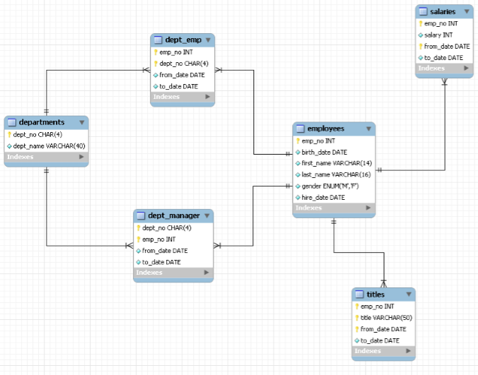
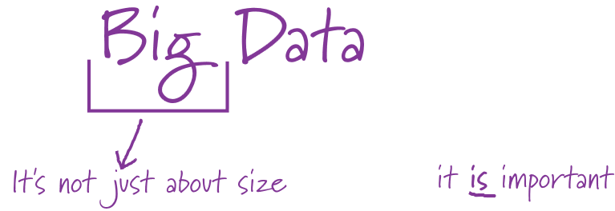
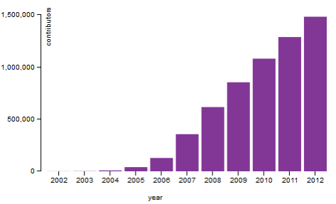
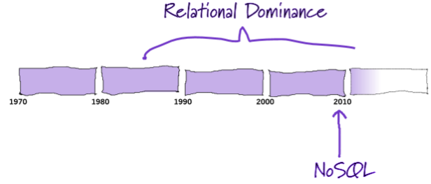
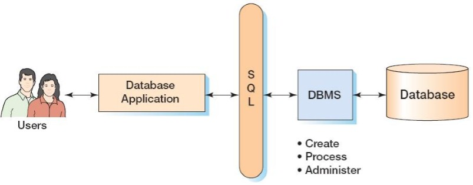
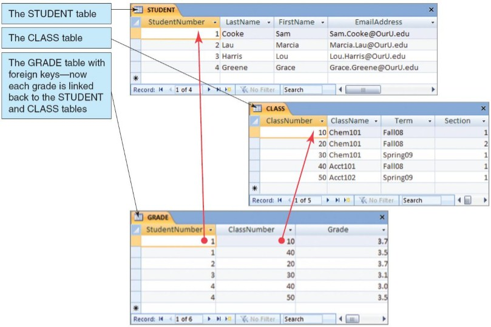

Databases
Introduction to Databases
Data and the meaning of it

Data can be messy
- Traditionally data is thought of as coming from well organized databases with controlled schemas supporting strong validation conditions.

Data can be messy
- BUT
- Data is found in many forms: log files, message queues, spreadsheets, ...
- Data is often scattered throughout an organization.
- There is often little or no schema to control the structure of the data.
Data can be messy
- BUT
- Data is often non-uniform with each element having different properties.
- The quality as well as the quantity of the data are often big problems.

Data is distributed
- The wide availability, and ease of access, through the internet means that data comes from many more contributors.

The value of data
- Without data, computers are of little value.
- For financial and/or legal reasons, organizations collect and store vast amounts of data about employees, customers, finances, vendors, products, transactions, ...
- Although it's difficult to get hard figures on the value of making full use of your data, much of the success of companies such as Amazon and Google is credited to their effective use of data.
The meaning of data
- Raw or unprocessed data is not very useful to us, they are recorded facts and figures.
- However by processing and filtering data we can transform the data into information.
- Information is knowledge derived from data. It is a representation of data in a meaningful context.
- The data on students, classes, and grades could produce information about each student’s GPA (grade point average).
Structuring data
- The purpose of a database is to help people track things of interest to them and organize the data in a controlled and structured way.
- Databases record data, but they do so in such a way that we can produce information from the data.
- Organizations and individuals use databases to bring independent sources of data together and store them electronically.
- Thus, a database is composed of related files that are consolidated, organized and stored together.
Database Management Systems
Database Management System (DBMS)
- Database management systems (DBMS) are used to access and manipulate data in a database.
- A database management system is a software package that enables users to edit, link, and update files as needs dictate.
Types of Database Management Systems
- Not so long ago:
- Application designers aimed towards a single, coherent and consistent model of data in the enterprise.
- This was primarily based on relational databases.
- Now:
- Application designers need to consider which database technology is appropriate for their situation.
Types of Database Management Systems
- DBMSs come in many shapes and sizes.
- Two main categories can be distinguished
- SQL databases
- Relational databases
- NoSQL databases
- SQL databases

Types of Database Management Systems
- NoSQL databases
- Wide column store / column families
- Document store
- Key Value / Tuple store
- Graph databases
- Column families, document store and key value stores are also called aggregate oriented databases.
Relational databases
Relational databases
- Relational databases management systems (RDBMS) have been the dominant data storage technology in the enterprise for over twenty years.
- Structured Query Language (SQL) is an internationally recognized standard database language that is used by all commercial DBMSs.

Relational databases
- The relational data model, with its simple tabular structure and powerful query language, is the right choice for many kinds of data.
